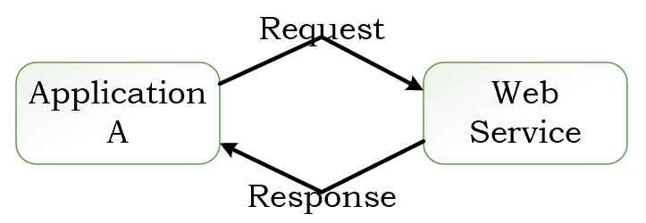

<!DOCTYPE html>
<html>
<head><meta name="generator" content="Hexo 3.8.0">
  <!-- hexo-inject:begin --><!-- hexo-inject:end --><meta charset="utf-8">
  

  
  <title>TODO List Project - Backend Part I | TongTong Shi&#39;s Blog</title>
  <meta name="viewport" content="width=device-width, initial-scale=1, maximum-scale=1">
  <meta name="description" content="previous_step  Understanding Web Services and REST">
<meta name="keywords" content="Project,Angular">
<meta property="og:type" content="article">
<meta property="og:title" content="TODO List Project - Backend Part I">
<meta property="og:url" content="http://yoursite.com/2019/06/06/todo-webservices-REST/index.html">
<meta property="og:site_name" content="TongTong Shi&#39;s Blog">
<meta property="og:description" content="previous_step  Understanding Web Services and REST">
<meta property="og:locale" content="default">
<meta property="og:image" content="http://yoursite.com/2019/06/06/todo-webservices-REST/webserivecom.png">
<meta property="og:image" content="http://yoursite.com/2019/06/06/todo-webservices-REST/webserviceII.png">
<meta property="og:image" content="http://yoursite.com/2019/06/06/todo-webservices-REST/REST.png">
<meta property="og:updated_time" content="2019-06-16T15:43:16.803Z">
<meta name="twitter:card" content="summary">
<meta name="twitter:title" content="TODO List Project - Backend Part I">
<meta name="twitter:description" content="previous_step  Understanding Web Services and REST">
<meta name="twitter:image" content="http://yoursite.com/2019/06/06/todo-webservices-REST/webserivecom.png">
  
    <link rel="alternate" href="/atom.xml" title="TongTong Shi&#39;s Blog" type="application/atom+xml">
  
  
    <link rel="icon" href="/favicon.png">
  
  
    <link href="//fonts.googleapis.com/css?family=Source+Code+Pro" rel="stylesheet" type="text/css">
  
  <link rel="stylesheet" href="/css/style.css"><!-- hexo-inject:begin --><!-- hexo-inject:end -->
</head>
</html>
<body>
  <!-- hexo-inject:begin --><!-- hexo-inject:end --><div id="container">
    <div id="wrap">
      <header id="header">
  <div id="banner"></div>
  <div id="header-outer" class="outer">
    <div id="header-title" class="inner">
      <h1 id="logo-wrap">
        <a href="/" id="logo">TongTong Shi&#39;s Blog</a>
      </h1>
      
    </div>
    <div id="header-inner" class="inner">
      <nav id="main-nav">
        <a id="main-nav-toggle" class="nav-icon"></a>
        
          <a class="main-nav-link" href="/">Home</a>
        
          <a class="main-nav-link" href="/archives">Archives</a>
        
      </nav>
      <nav id="sub-nav">
        
          <a id="nav-rss-link" class="nav-icon" href="/atom.xml" title="RSS Feed"></a>
        
        <a id="nav-search-btn" class="nav-icon" title="Search"></a>
      </nav>
      <div id="search-form-wrap">
        <form action="//google.com/search" method="get" accept-charset="UTF-8" class="search-form"><input type="search" name="q" class="search-form-input" placeholder="Search"><button type="submit" class="search-form-submit">&#xF002;</button><input type="hidden" name="sitesearch" value="http://yoursite.com"></form>
      </div>
    </div>
  </div>
</header>
      <div class="outer">
        <section id="main"><article id="post-todo-webservices-REST" class="article article-type-post" itemscope itemprop="blogPost">
  <div class="article-meta">
    <a href="/2019/06/06/todo-webservices-REST/" class="article-date">
  <time datetime="2019-06-06T15:25:04.000Z" itemprop="datePublished">2019-06-06</time>
</a>
    
  </div>
  <div class="article-inner">
    
    
      <header class="article-header">
        
  
    <h1 class="article-title" itemprop="name">
      TODO List Project - Backend Part I
    </h1>
  

      </header>
    
    <div class="article-entry" itemprop="articleBody">
      
        <a href="/2019/05/29/todo-frontendII/" title="previous_step">previous_step</a>
<h2 id="understanding-web-services-and-rest"><a class="markdownIt-Anchor" href="#understanding-web-services-and-rest"></a> Understanding Web Services and REST</h2>
<a id="more"></a>
<p><font color="dodgerblue"><strong>1. WEB SERVICE - W3C DEFINITION</strong></font><br>
<font color="gray">Software system designed to support interoperatble machine-to-machine interaction over a network.</font></p>
<p><font color="dodgerblue"><strong>2. 3 KEYS</strong></font></p>
<ul>
<li><font color="gray">Designed for machine-to-machine (or application-to-application) interaction</font></li>
<li><font color="gray">Should be interoperable - Not platform dependent</font></li>
<li><font color="gray">Should allow communication over a network</font></li>
</ul>
<p><font color="dodgerblue"><strong>3. How does data exchange between applications take place?</strong></font><br>
<br>
<font color="gray">The input to a web service is called a <em>Request</em> and the output from a web service is called a <em>Response</em>. <em>Request</em> and <em>Response</em> are the basic concepts behind web service.</font></p>
<p><font color="dodgerblue"><strong>4. How can we make web service platform independent?</strong></font></p>
<ul>
<li><font color="gray">The key point is the <em>Request</em> and <em>Response</em> should also be platform independent. They should be in formats which are supported by all different kinds of platforms.</font></li>
<li><font color="gray">There are two popular formats for <em>Request</em> and <em>Response</em>. One is <strong>XML</strong>, i.e. Extensible Markup Language. Another is <strong>JSON</strong>, standing for javascript object notation.</font></li>
</ul>
<p><font color="dodgerblue"><strong>5. How does the Application A know the format of Request and Response?</strong></font><br>
<font color="gray">The solution is Service Definition.</font><br>
<br>
<font color="gray">End point defines where the web service is available, say what URL is the service is exposed at.</font></p>
<p><font color="dodgerblue"><strong>6. Key Terminologies</strong></font></p>
<ul>
<li><font color="purple">Request and Response:</font><font color="gray"><em>Request</em> is the input of our service and <em>response</em> is the output from a web service. Message exchange format is the format of the <em>request</em> and <em>response</em>.</font></li>
<li><font color="purple">Service Provider or Server:</font><font color="gray"> The web service shown in the above figure is called a <em>service provider</em>. <em>Service provider</em> is the one which hosts the web service.</font></li>
<li><font color="purple">Service Consumer or Client:</font><font color="gray"> The service consumer is the one which is consuming the web service.</font></li>
<li><font color="purple">Service Definition:</font><font color="gray"> The Service definition is the contract between the service provider and the service consumers.</font></li>
<li><font color="purple">Transport (HTTP and MQ):</font><font color="gray"> Transport defines how a service is called. Is the service exposed over Internet. Or is the service exposed over a Queue. Two popular formats are HTTP and MQ. HTTP is basically over the web. Just like you type a URL in the browser, in a similar way application A would call the web service. The other format is MQ is to use communication over the queue. The service requester would place a message in the queue. The service provider would be listening on the queue. And as soon as there is a request on teh queue it would take the request, do the processing of it, create the response and put it back in the queue and the service requester would get the response from the queue. The transport which is used is MQ.</font></li>
</ul>
<p><font color="dodgerblue"><strong>7. RESTful Service</strong></font><br>
<font color="tomato">The key thing about REST services is the fact that they would want to make best use of HTTP protocol.</font><br>
</p>
<p><font color="dodgerblue"><strong>7.1 What is HTTP?</strong></font></p>
<p><font color="purple">What happens is when I enter a URL in the browser, </font><font color="gray">a request is being sent to the web server. And the website server responds back with a response.</font><br>
<font color="purple">What is the format of this request and response?</font><font color="gray"> These requests and responses are in a format which is defined by HTTP, i.e. Hypertext Transfer Protocol. For example, </font></p>
<ul>
<li><font color="gray"> When I type in a URL in the browser. It sends a GET request to the Server. Server response back with a HTTP response containing the HTML. The browser looks at that response, takes the HTML and displays it on the screen.</font></li>
<li><font color="gray"> Another example say there is a form I’m filling up with a list of details and I click the submit button. In those kind of scenarious, typically, we are creating a a POST request. The HTTP defines the headers which are present in the request and the body of the request. Also in the response there are headers and also the body.</font></li>
</ul>
<p><font color="gray">In addtion to the request header and request body, HTTP also defines something called </font><font color="purple">request Methods. You can indicate what action you are doing by using the HTTP request methods.</font></p>
<ul>
<li><font color="purple"><em>GET</em>: </font><font color="gray">I am trying to get the details of something.</font></li>
<li><font color="purple"><em>POST</em>: </font><font color="gray">I am trying to create something.</font></li>
<li><font color="purple"><em>PUT</em>: </font><font color="gray">I am trying to update something.</font></li>
</ul>
<p><font color="purple">HTTP response on the other hand will also include a HTTP response status code.</font><font color="gray">Was it successful? Page not found? 404 and thinks like that.</font></p>
<p><font color="dodgerblue"><strong>7.2 RESTful Web Services</strong></font></p>
<p><font color="tomato">RESTful web services try to define services using the different concepts that are already present in HTTP.</font></p>
<p><font color="dodgerblue"><strong>KEY ABSTRACTION - RESOURCE</strong></font><br>
<font color="purple">The resource is that you would want to expose to the outside world through your application. In this todo list app, users, todos, … are all resources.</font></p>
<ul>
<li>
<p><font color="gray">A resource has an URI (Uniform Resource Identifier), such as</font></p>
<ul>
<li><font color="gray">/user/Teemo/todos/1</font></li>
<li><font color="gray">/user/Teemo/todos</font></li>
<li><font color="gray">/user/Teemo</font></li>
</ul>
</li>
<li>
<p><font color>A resource can have different representations, such as</font></p>
<ul>
<li><font color="gray">XML, HTML, JSON</font></li>
</ul>
</li>
</ul>
<p><font color="gray">REST does not worry about how you are representing your resource. Is it HTML, is it JSON? That does not really matter.</font><font color="purple">The most important thing is the fact that you define your resource and perform the actions on the resource using whatever facilities that are provided by HTTP.</font><font color="gray">For example,</font></p>
<ul>
<li><font color="gray">Create a User - POST/users</font></li>
<li><font color="gray">Delete a User - DELETE/users/1</font></li>
<li><font color="gray">Get all Users - GET/users</font></li>
<li><font color="gray">Get one user - GET/users/1</font></li>
</ul>
<p><font color="purple">The important thing about REST is that fact you have to think in terms of the resources.</font><font color="gray"> What are the different resources that are present in your appliation that you would want to expose to other applications.</font><font color="purple">And the second thing is make use of the HTTP.</font><font color="gray">If you want to do any operations on the resource you have to use the verbs which are already specified by HTTP. GET, PUT, POST, FETCH…Transport is always HTTP. REST is completely build on top of HTTP. </font></p>
<p><font color="gray">There is no standard service definition which is attached with REST. That can be a drawback because when a client wants to consume a service it needs to understand the request format and response format. So the web service definition will be really useful. <em>WADL</em>, i.e. web application definition language is one of the formats in which you can specify your RESTful Web services. Or <em>Swagger</em> which is more popular.</font></p>
<a href="/2019/06/06/todo-backendI/" title="next step">next step</a>

      
    </div>
    <footer class="article-footer">
      <a data-url="http://yoursite.com/2019/06/06/todo-webservices-REST/" data-id="ck1hylwz1017sq4ve8t5x8sg8" class="article-share-link">Share</a>
      
      
  <ul class="article-tag-list"><li class="article-tag-list-item"><a class="article-tag-list-link" href="/tags/Angular/">Angular</a></li><li class="article-tag-list-item"><a class="article-tag-list-link" href="/tags/Project/">Project</a></li></ul>

    </footer>
  </div>
  
    
<nav id="article-nav">
  
    <a href="/2019/06/06/todo-backendI/" id="article-nav-newer" class="article-nav-link-wrap">
      <strong class="article-nav-caption">Newer</strong>
      <div class="article-nav-title">
        
          TODO List Project - Backend Part II
        
      </div>
    </a>
  
  
    <a href="/2019/06/05/leetcodeQ2/" id="article-nav-older" class="article-nav-link-wrap">
      <strong class="article-nav-caption">Older</strong>
      <div class="article-nav-title">Add Two Numbers</div>
    </a>
  
</nav>

  
</article>

</section>
        
          <aside id="sidebar">
  
    
  <div class="widget-wrap">
    <h3 class="widget-title">Tag Cloud</h3>
    <div class="widget tagcloud">
      <a href="/tags/Angular/" style="font-size: 15.42px;">Angular</a> <a href="/tags/Array/" style="font-size: 17.5px;">Array</a> <a href="/tags/BFS/" style="font-size: 16.67px;">BFS</a> <a href="/tags/BST/" style="font-size: 12.5px;">BST</a> <a href="/tags/Backtracking/" style="font-size: 16.25px;">Backtracking</a> <a href="/tags/Binary-Search/" style="font-size: 15.83px;">Binary Search</a> <a href="/tags/Binary-Search-Tree/" style="font-size: 10.42px;">Binary Search Tree</a> <a href="/tags/Bucket-Sort/" style="font-size: 10.83px;">Bucket Sort</a> <a href="/tags/Cantor-Unfold/" style="font-size: 10px;">Cantor Unfold</a> <a href="/tags/Cat1-Cat1-1/" style="font-size: 10px;">Cat1,Cat1.1</a> <a href="/tags/Cat2/" style="font-size: 10px;">Cat2</a> <a href="/tags/Cat3/" style="font-size: 10px;">Cat3</a> <a href="/tags/Combination/" style="font-size: 12.92px;">Combination</a> <a href="/tags/Counting-Sort/" style="font-size: 10.83px;">Counting Sort</a> <a href="/tags/DFS/" style="font-size: 17.92px;">DFS</a> <a href="/tags/DP/" style="font-size: 19.58px;">DP</a> <a href="/tags/Data-Structure/" style="font-size: 10px;">Data Structure</a> <a href="/tags/Database/" style="font-size: 11.25px;">Database</a> <a href="/tags/Design/" style="font-size: 15.42px;">Design</a> <a href="/tags/Design-Pattern/" style="font-size: 12.92px;">Design Pattern</a> <a href="/tags/Disjoint-Set/" style="font-size: 14.17px;">Disjoint Set</a> <a href="/tags/Divide-and-Conquer/" style="font-size: 10px;">Divide and Conquer</a> <a href="/tags/Graph/" style="font-size: 10px;">Graph</a> <a href="/tags/Greedy/" style="font-size: 18.75px;">Greedy</a> <a href="/tags/HashTable/" style="font-size: 18.33px;">HashTable</a> <a href="/tags/Heap/" style="font-size: 12.92px;">Heap</a> <a href="/tags/Integer-Overflow/" style="font-size: 10.42px;">Integer Overflow</a> <a href="/tags/JQuery/" style="font-size: 10px;">JQuery</a> <a href="/tags/Java-Baisc/" style="font-size: 10px;">Java Baisc</a> <a href="/tags/Java-Basic/" style="font-size: 11.67px;">Java Basic</a> <a href="/tags/KMP/" style="font-size: 10px;">KMP</a> <a href="/tags/KMP-algorithm/" style="font-size: 10px;">KMP algorithm</a> <a href="/tags/LeetCode/" style="font-size: 20px;">LeetCode</a> <a href="/tags/Linked-List/" style="font-size: 11.25px;">Linked List</a> <a href="/tags/LinkedList/" style="font-size: 10.83px;">LinkedList</a> <a href="/tags/LintCode/" style="font-size: 16.25px;">LintCode</a> <a href="/tags/Math/" style="font-size: 19.17px;">Math</a> <a href="/tags/Memorization/" style="font-size: 11.67px;">Memorization</a> <a href="/tags/Merge-Sort/" style="font-size: 10px;">Merge Sort</a> <a href="/tags/Monotonous-Stack/" style="font-size: 14.17px;">Monotonous Stack</a> <a href="/tags/Multiplication/" style="font-size: 10.42px;">Multiplication</a> <a href="/tags/MyBatis/" style="font-size: 12.5px;">MyBatis</a> <a href="/tags/MySQL/" style="font-size: 10.42px;">MySQL</a> <a href="/tags/MySql/" style="font-size: 10px;">MySql</a> <a href="/tags/Number-Theoretic-Algorithm/" style="font-size: 10px;">Number-Theoretic Algorithm</a> <a href="/tags/OOD/" style="font-size: 10px;">OOD</a> <a href="/tags/PHP/" style="font-size: 11.25px;">PHP</a> <a href="/tags/Partition/" style="font-size: 11.25px;">Partition</a> <a href="/tags/Permutation/" style="font-size: 10.83px;">Permutation</a> <a href="/tags/Project/" style="font-size: 15px;">Project</a> <a href="/tags/PropertyPlaceholderConfigurer/" style="font-size: 10px;">PropertyPlaceholderConfigurer</a> <a href="/tags/Queue/" style="font-size: 10px;">Queue</a> <a href="/tags/Quick-Select/" style="font-size: 10px;">Quick Select</a> <a href="/tags/Recursion/" style="font-size: 12.08px;">Recursion</a> <a href="/tags/Recurtion/" style="font-size: 10px;">Recurtion</a> <a href="/tags/Reflection/" style="font-size: 10px;">Reflection</a> <a href="/tags/SQL/" style="font-size: 10.42px;">SQL</a> <a href="/tags/SSM/" style="font-size: 12.08px;">SSM</a> <a href="/tags/Sliding-Window/" style="font-size: 13.75px;">Sliding Window</a> <a href="/tags/Sort/" style="font-size: 13.33px;">Sort</a> <a href="/tags/Spring/" style="font-size: 12.5px;">Spring</a> <a href="/tags/Spring-Boot/" style="font-size: 12.92px;">Spring Boot</a> <a href="/tags/Spring-Security/" style="font-size: 10.42px;">Spring Security</a> <a href="/tags/SpringMVC/" style="font-size: 12.08px;">SpringMVC</a> <a href="/tags/Stack/" style="font-size: 17.08px;">Stack</a> <a href="/tags/String/" style="font-size: 16.25px;">String</a> <a href="/tags/Sweep-Line/" style="font-size: 10.42px;">Sweep Line</a> <a href="/tags/Thread/" style="font-size: 11.67px;">Thread</a> <a href="/tags/Top-Interview-Qs/" style="font-size: 11.25px;">Top Interview Qs</a> <a href="/tags/Topology-Sorting/" style="font-size: 11.67px;">Topology Sorting</a> <a href="/tags/Tree/" style="font-size: 18.75px;">Tree</a> <a href="/tags/Trie/" style="font-size: 11.25px;">Trie</a> <a href="/tags/Two-Pointers/" style="font-size: 16.25px;">Two Pointers</a> <a href="/tags/Union-Find/" style="font-size: 14.58px;">Union Find</a> <a href="/tags/backtracking/" style="font-size: 10.42px;">backtracking</a> <a href="/tags/gcd/" style="font-size: 10px;">gcd</a>
    </div>
  </div>

  
    
  <div class="widget-wrap">
    <h3 class="widget-title">Archives</h3>
    <div class="widget">
      <ul class="archive-list"><li class="archive-list-item"><a class="archive-list-link" href="/archives/2019/10/">October 2019</a></li><li class="archive-list-item"><a class="archive-list-link" href="/archives/2019/09/">September 2019</a></li><li class="archive-list-item"><a class="archive-list-link" href="/archives/2019/08/">August 2019</a></li><li class="archive-list-item"><a class="archive-list-link" href="/archives/2019/07/">July 2019</a></li><li class="archive-list-item"><a class="archive-list-link" href="/archives/2019/06/">June 2019</a></li><li class="archive-list-item"><a class="archive-list-link" href="/archives/2019/05/">May 2019</a></li><li class="archive-list-item"><a class="archive-list-link" href="/archives/2019/04/">April 2019</a></li></ul>
    </div>
  </div>


  
    
  <div class="widget-wrap">
    <h3 class="widget-title">Recent Posts</h3>
    <div class="widget">
      <ul>
        
          <li>
            <a href="/2019/10/07/design-patterns/">OO Design Patterns</a>
          </li>
        
          <li>
            <a href="/2019/09/26/singleton-design-pattern/">Singleton Design Pattern - One-of-a-Kind Objects</a>
          </li>
        
          <li>
            <a href="/2019/09/25/command-design-pattern/">Command Design Pattern - Encapsulating Invocation</a>
          </li>
        
          <li>
            <a href="/2019/09/24/observer-design-pattern/">Observer Design Pattern = Publishers + Subscribers</a>
          </li>
        
          <li>
            <a href="/2019/09/24/builder-design-pattern/">Builder Design Pattern</a>
          </li>
        
      </ul>
    </div>
  </div>

  
</aside>
        
      </div>
      <footer id="footer">
  
  <div class="outer">
    <span id="footer-info" class="inner">
      &copy; 2019 Tong Shi<br>
      Powered by <a href="http://hexo.io/" target="_blank">Hexo</a>
    </span>
  </div>
  <div id="analysis" style="text-align:center;">
  <span id="busuanzi_container_site_uv">Total visitors: <span id="busuanzi_value_site_uv"></span>persion-time</span>
	<span id="busuanzi_container_site_pv">
      Total visits: <span id="busuanzi_value_site_pv"></span> times</span>
  </div>
</footer>

<script async src="//busuanzi.ibruce.info/busuanzi/2.3/busuanzi.pure.mini.js">
</script>
    </div>
    <nav id="mobile-nav">
  
    <a href="/" class="mobile-nav-link">Home</a>
  
    <a href="/archives" class="mobile-nav-link">Archives</a>
  
</nav>
    

<script src="//ajax.googleapis.com/ajax/libs/jquery/2.0.3/jquery.min.js"></script>


  <link rel="stylesheet" href="/fancybox/jquery.fancybox.css">
  <script src="/fancybox/jquery.fancybox.pack.js"></script>


<script src="/js/script.js"></script>


  </div>
<script type="text/x-mathjax-config">
    MathJax.Hub.Config({
        tex2jax: {
            inlineMath: [ ["$","$"], ["\\(","\\)"] ],
            skipTags: ['script', 'noscript', 'style', 'textarea', 'pre', 'code'],
            processEscapes: true
        }
    });
    MathJax.Hub.Queue(function() {
        var all = MathJax.Hub.getAllJax();
        for (var i = 0; i < all.length; ++i)
            all[i].SourceElement().parentNode.className += ' has-jax';
    });
</script>
<script src="http://cdn.mathjax.org/mathjax/latest/MathJax.js?config=TeX-AMS-MML_HTMLorMML"></script><!-- hexo-inject:begin --><!-- Begin: Injected MathJax -->
<script type="text/x-mathjax-config">
  MathJax.Hub.Config("");
</script>

<script type="text/x-mathjax-config">
  MathJax.Hub.Queue(function() {
    var all = MathJax.Hub.getAllJax(), i;
    for(i=0; i < all.length; i += 1) {
      all[i].SourceElement().parentNode.className += ' has-jax';
    }
  });
</script>

<script type="text/javascript" src="//cdn.mathjax.org/mathjax/latest/MathJax.js?config=TeX-AMS-MML_HTMLorMML">
</script>
<!-- End: Injected MathJax -->
<!-- hexo-inject:end -->
</body>
</html>